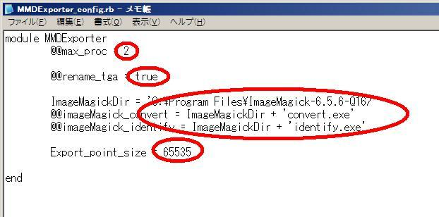

はじめに
この手順はツールの初期設定値を設定する設定ファイルを編集する手順が書かれています。
設定可能な初期設定値は
・画像の変換のために実行しているImageMagic/convert.exeコマンドの最大起動数
・TGA、BMPリネームを行う/行わないのデフォルト設定
・ImageMagic/convert.exeコマンドのパス指定
・ImageMagic/identify.exeコマンドのパス指定
の4項目です。
１．Google SketchUpの"Plugins"フォルダにある"MMDExporter_config.rb"ファイルをメモ帳で開きます。(メモ帳へドラッグ＆ドロップで開くことが出来ます。メモ帳でなく任意のテキストエディタで編集を行ってもかまいません。)
２．以下の画像で赤に囲まれているところが編集出来ます。

| 一番上 | 画像をTGAに変換するときにImageMagickのconvert.exe、identify.exeコマンドを実行しますが、このツールではconvert.exe、identify.exeコマンドを複数個同時に起動することが可能です。最大何個まで起動を許すのかを半角の数字で記述します。最小値は1、最大値は16まで有効です。この範囲を逸脱した場合は1になります。 |
| 二つ目 | ツールを起動したときのウインドウにある"Rename Texture filename"チェックボックスの初期値を設定します。半角の小文字で"true"と記述すると"Rename Texture filename"チェックボックスにチェックが入った状態でウインドウが開きます。半角の小文字で"false"と記述するとチェックボックスにチェックが入っていない状態でウインドウが開きます。trueおよびfalseのみ有効です。これら以外を設定した場合はfalseになります。 |
| 三つ目 | ImageMagickのconvert.exe、indentify.exeファイルのパスを任意に設定したい場合に使用します。convert.exe、identify.exeファイルがインストールされているフォルダのパスをImageMagickDirにシングルクオーテーション→'で囲って半角で記述してください。相対パス、絶対パスともに使用可能です。記述されていない場合、パスが有効でない場合はGoogle SketchUpの"Plugins"フォルダおよびシステムのパスからconvert.exe、identify.exeを探します。見つからなかった場合は画像の変換は行いません。 |
| 一番下 | 自動分割時にひとつのアクセサリの最大頂点数を設定します。MMDでは65535以上に設定するとアクセサリが読み込めないです。 |
３．編集が終わったらファイル→保存でファイルを保存します。
４．メモ帳を閉じて設定ファイルの編集は終了です。